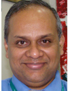
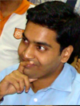
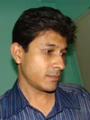

Our Team
Dr Srijon Mukherji
Dr Srijon Mukherji FDSRCS Eng In the last 10 years of his practice in the specialty of Maxillofacial Surgery in the different Hospitals and Institutes both in the UK and India, he has performed well over two thousand surgeries in the management of Oral Cancer, Congenital defects, and Trauma associated with Facial Injuries apart from surgeries due to purely cosmetic reasons. Presently, he is the leading surgeon in this specialty in the Eastern, North Eastern India providing also for Nepal , Bhutan and Bangladesh .
Dr Srijon Mukherji FDSRCS Eng In the last 10 years of his practice in the specialty of Maxillofacial Surgery in the different Hospitals and Institutes both in the UK and India, he has performed well over two thousand surgeries in the management of Oral Cancer, Congenital defects, and Trauma associated with Facial Injuries apart from surgeries due to purely cosmetic reasons. Presently, he is the leading surgeon in this specialty in the Eastern, North Eastern India providing also for Nepal , Bhutan and Bangladesh .
Dr Swatisikta
Dr Swatisikta A post graduate from the King Edward Medical College, Mumbai, she has been in the anaesthesiology and critical care department of RKMSP Hospital, Kolkata for last 3 years and specialises in medically compromised and paediatric head neck surgical patients .
Dr Swatisikta A post graduate from the King Edward Medical College, Mumbai, she has been in the anaesthesiology and critical care department of RKMSP Hospital, Kolkata for last 3 years and specialises in medically compromised and paediatric head neck surgical patients .
Dr Asok Sengupta
Dr Asok Sengupta MD FRCP Edin He belongs to the rare breed of FRCPs in India , his specialty is Chest and Intensive Care Medicine. He has treated numerous critical cases successfully in a distinguished career spanning well over 20 years as consultant to many premier Hospitals and Institutes in the UK and India .
Dr Asok Sengupta MD FRCP Edin He belongs to the rare breed of FRCPs in India , his specialty is Chest and Intensive Care Medicine. He has treated numerous critical cases successfully in a distinguished career spanning well over 20 years as consultant to many premier Hospitals and Institutes in the UK and India .
Dr Anjan Bhattacharya
Dr Anjan Bhattacharya MRCP MRCPCH In his past career of 18 years he as worked in the field of Paediatrics, Neonatology and Developmental Paediatrics both in India and the UK . He is an Advanced Paediatrics Life Support (APLS) in Europe , a Neonatal Life Support (NLS) provider In and a Basic Life Support (BLS) provider in the UK . He has also taught undergraduate medical students at Queen Mary's University, London .
Dr Anjan Bhattacharya MRCP MRCPCH In his past career of 18 years he as worked in the field of Paediatrics, Neonatology and Developmental Paediatrics both in India and the UK . He is an Advanced Paediatrics Life Support (APLS) in Europe , a Neonatal Life Support (NLS) provider In and a Basic Life Support (BLS) provider in the UK . He has also taught undergraduate medical students at Queen Mary's University, London .
Dr Debashish Ghosh
Dr Debashish Ghosh A member of the Royal College Of Physicians, London, British Society of Echocardiography & The Cardiological Society of India, he is one of the most eminent consultant cardiologists of the region, he has been responsible for the management of critical cardiological patients in hospitals like Apollo Glenegales Hospitals, The Assembly Of Godchurch Hospital etc ever since his return to India in 2002.
Dr Debashish Ghosh A member of the Royal College Of Physicians, London, British Society of Echocardiography & The Cardiological Society of India, he is one of the most eminent consultant cardiologists of the region, he has been responsible for the management of critical cardiological patients in hospitals like Apollo Glenegales Hospitals, The Assembly Of Godchurch Hospital etc ever since his return to India in 2002.
Dr. Harsh Jain
Dr. Harsh Jain MS, FRCS (Glasgow), FRCS Neurosurgery (UK), Cerebrovascular Fellow (Toronto). Having completed his FRCS Neurosurgery training in the UK and fellowships in Skull Base and Cerebrovascular Surgery in Sao Paolo and Toronto, he is currently working as a Consultant Neurosurgeon with a special interest in the microsurgical anatomy of the brain, operative approaches, microsurgery for brain and spinal cord AVMs, tumours and aneurysms. To attain his microsurgical skills, he has attended and conducted numerous hands-on workshops in India and abroad. He has been a valuable team member in complex maxillo-facial operations that involve the pathology extending into the cranial compartment like craniofacial injuries, CSF leaks, tumours and infections involving the orbit, paranasal sinuses and anterior fossa of the cranium.
Dr. Harsh Jain MS, FRCS (Glasgow), FRCS Neurosurgery (UK), Cerebrovascular Fellow (Toronto). Having completed his FRCS Neurosurgery training in the UK and fellowships in Skull Base and Cerebrovascular Surgery in Sao Paolo and Toronto, he is currently working as a Consultant Neurosurgeon with a special interest in the microsurgical anatomy of the brain, operative approaches, microsurgery for brain and spinal cord AVMs, tumours and aneurysms. To attain his microsurgical skills, he has attended and conducted numerous hands-on workshops in India and abroad. He has been a valuable team member in complex maxillo-facial operations that involve the pathology extending into the cranial compartment like craniofacial injuries, CSF leaks, tumours and infections involving the orbit, paranasal sinuses and anterior fossa of the cranium.
Dr Subir Roy
Dr Subir Roy MD, MRCP Consultant Endocrinologist & Diabetologist.
Dr Subir Roy MD, MRCP Consultant Endocrinologist & Diabetologist.

Dr Arijit Bose
Dr Arijit Bose MS, FRCS, FRCS Emergency Medicine
Director, Emergency / Life Support Training Services.
Dr Arijit Bose MS, FRCS, FRCS Emergency Medicine
Director, Emergency / Life Support Training Services.

Dr Soumo Mitra
Dr Soumo Mitra MDS Orthodontics
Consultant Orthodontist. Special Interest, Cleft and Surgical Orthodontics.
Dr Soumo Mitra MDS Orthodontics
Consultant Orthodontist. Special Interest, Cleft and Surgical Orthodontics.
Dr Utpal Chakraborty
Dr Utpal Chakraborty BDS Cal Chief of Dental Care Services
Dr Utpal Chakraborty BDS Cal Chief of Dental Care Services
Ms Sudeshna Mukherji
Ms Sudeshna Mukherji A post graduate in Hospital Management from Greenwich School of Management, London, and Institute of Healthcare Management, Chennai, she has, in the past 12 years of her career, served with distinction in different premier Institutions both in India and the UK, in Healthcare sectors primarily in the functional areas of Hospital and ward administration, coordination and liaison both in the corporate and Government (UK) sectors and resources management.
Ms Sudeshna Mukherji A post graduate in Hospital Management from Greenwich School of Management, London, and Institute of Healthcare Management, Chennai, she has, in the past 12 years of her career, served with distinction in different premier Institutions both in India and the UK, in Healthcare sectors primarily in the functional areas of Hospital and ward administration, coordination and liaison both in the corporate and Government (UK) sectors and resources management.

Mr Utpal Sinha
Mr Utpal Sinha A Cost Accountant, he has done his ICWA from the ICWAI and post graduation in business management with major in Human Resources from the IISWBM. In the last 12 years of his career he has been a consultant to different firms like A F Ferguson & Co etc, aside from being a regular faculty in the different institutions like Global Institute of Engineering and Management and the like.
Mr Utpal Sinha A Cost Accountant, he has done his ICWA from the ICWAI and post graduation in business management with major in Human Resources from the IISWBM. In the last 12 years of his career he has been a consultant to different firms like A F Ferguson & Co etc, aside from being a regular faculty in the different institutions like Global Institute of Engineering and Management and the like.
Mr Kalyan Bhattacharyya
Mr Kalyan Bhattacharyya You will talk to most often, is the chief of Patient Care Coordination Service.
Mr Kalyan Bhattacharyya You will talk to most often, is the chief of Patient Care Coordination Service.